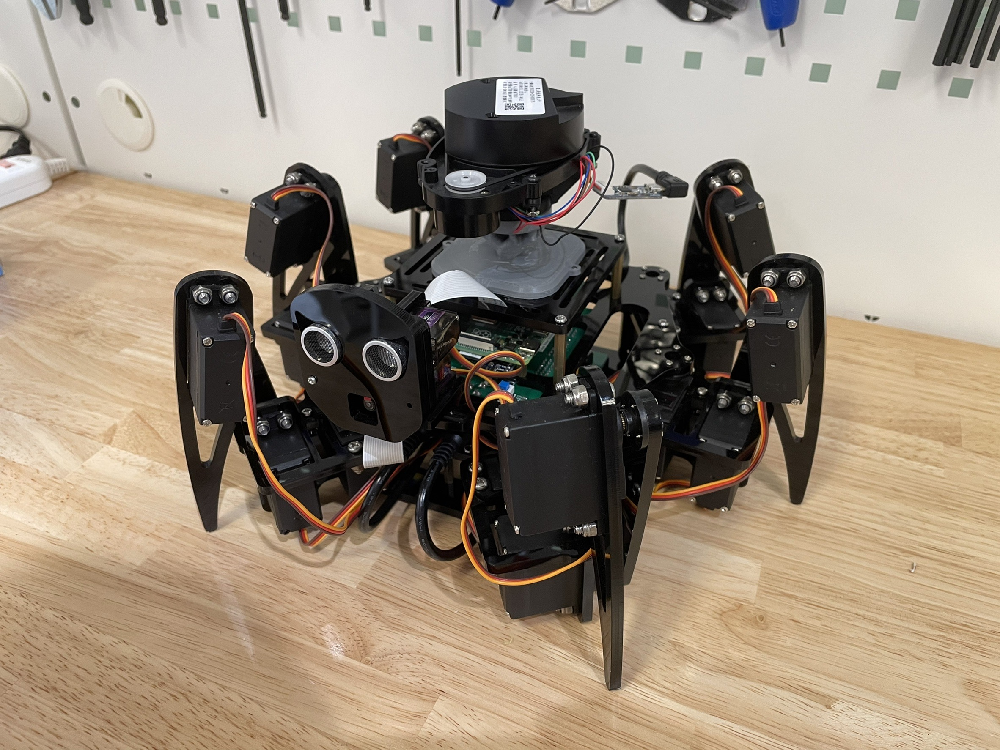
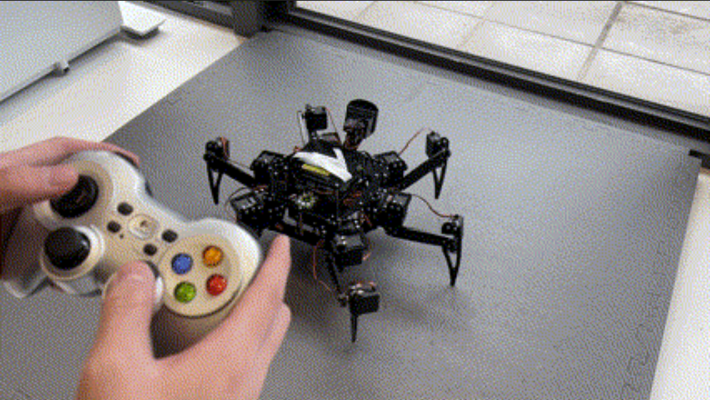
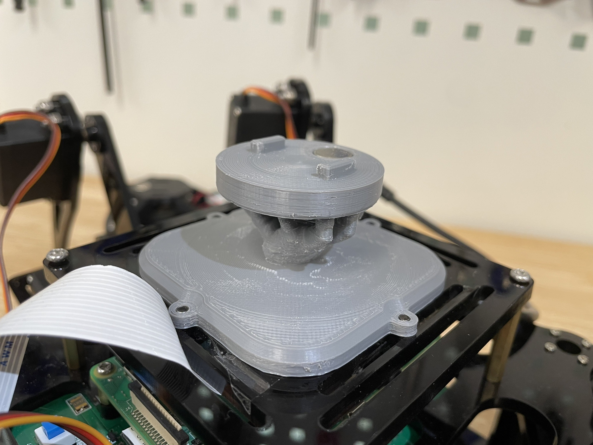

Hexapod Robot With Lidar and Camera
Code Hardware Personal Project
A ROS2 project for a hexapod robot uses a LiDAR to map and navigate the environment, and an AprilTag to follow. For control, a joystick is used to control the robot's movement and actions. This project enables the robot to autonomously navigate and perform tasks, such as automatic charging.

Motivation
This is my UROP(Undergrade Reasearch Opportunity Program) project at City Science Lab @ Taipei Tech / a coorperation with MIT Media Lab.
I really like any kind of robots, but it is my first time to have the project with legged robot and integrate ROS2 on this hexapod robot. I want to know the fundamental for the SLAM and Navigation ,therefore, I join the CSL UROP project.
ROS2 & Joystick Control
First, I used python to control this robot and made it can move e.g. linear and angular move control and stnace control. Then I create a node for subscribe the cmd_vel and joy, so that I can get the joy data and twist msg through ROS2 DDS to control this robot.


Mechnical Design & 3D Printer
Then I had to add a Lidar to do the SLAM thing, so I used the 3D printer the print a LiDAR base.

SLAM
I face some problem when I search how to do the SLAM because most of the algorithms for SLAM need IMU or Camera to fusion the odometry to make the map better. So I learn how to revise the parameter to choose whehter I need the IMU or Camera.
I try a lot of algorithms ex: Lio-SAM, Gmapping, Cartographer. I choose the Cartographer to be my result, because I don't have odometry. So Cartographer is the better choose. I used the joystick to control the hexapod robot moving around my Lab and using Cartographer to SLAM building the map for my Lab.


Navigation
Then I try to do the navigation, if I wanted to use ROS2 support navigation package(Navigation2), I need to create the tf tree. The map to odom I used the AMCL, and I use laser_scan_matcher this algorithm to use Lidar calculate the odometry of the robot. And then I used a static_transform_publisher to define the relation between base_link and laser.
Fortunately, I could launch the Nav2 package and made this robot go to any destination in the map.


AprilTag Control
Then, I try to think how should I do after navigation, my director recommand me can try AprilTag things. So I try to let the robot can localize through AprilTag, and conbine the control command to make the robot move to a fixed distance relative to AprilTag. So I can move the AprilTag and the robot can following the AprilTag.
AprilTag Developed at the University of Michigan, AprilTag is like a 2D barcode or a simplified QR Code. It contains a numeric ID code and can be used for location and orientation.


Final
Finally, I conbine the every function I create above. And use twist_mux node to manage any kind of cmd_vel topic, give each one a priority. Fisrt is the joystick, I need to make sure I can control the robot any time I wnat. Second is the AprilTag. Third is the Navigation.

Final
So I can control the robot through joystick fisrt, and then change to the navigation mode its LED light would change to blue when it is navgating. Then it will change back to green when it is in the destination. Then the robot will change to AprilTag mode the search the AprilTag and then following the Tag.